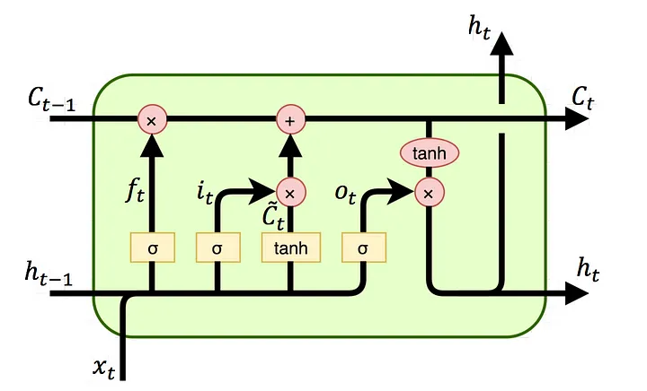
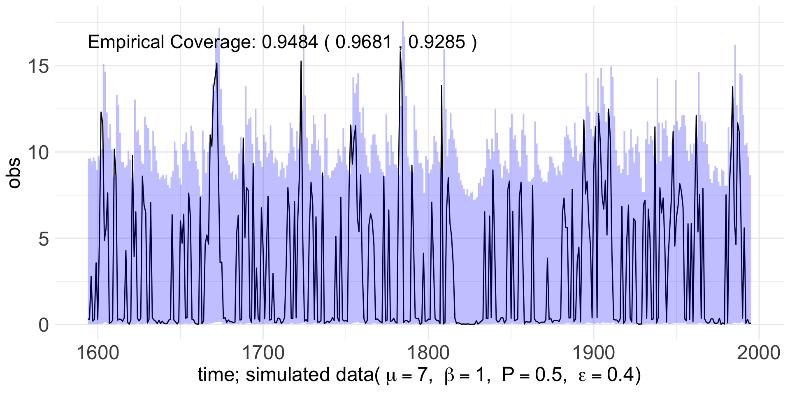

Copula-Based Mixture Transition Distribution Models for Forecasting Skewed and Zero-Inflated Time Series: Methodology and Comparisons with Deep Learning LSTM Networks
Frances Lin
üõ° Dissertation Defense
ü¶´ Oregon State University
November 5, 2025
Co-Advisors: Dr. Lisa Madsen, Dr. Charlotte Wickham
Committee Members: Dr. James Molyneux, Dr. Claudio Fuentes, Dr. Prasad Tadepalli
Motivation
Modeling complex patterns in sequence data is a central task across domains such as energy, insurance, and transportation.
- ⚠️ Real-world time series often show skewness and zero inflation, which can hinder prediction if ignored.
Recent AI advances, such as Recurrent Neural Networks (RNNs) and Long Short-Term Memory (LSTM) networks, effectively capture nonlinear and long-range dependence.
⚠️ A prior work found comparable performance between probabilistic Mixture Transition Distribution (MTD) model and deep learning LSTM for predicting disease spread.
⚠️ Claims of LSTM superiority can be misleading when compared to inappropriate benchmarks.

¬©Ô∏è NASA GES DISC üìç Limon Wind Energy Center, Colorado
NASA MERRA-2 Data

Objectives
Part I and II
Develop the copula-based Gamma Mixture Transition Distribution (Gamma MTD) model and its zero-inflated extension (ZIGamma MTD) to capture nonlinear dependence, skewed distributions, and semicontinuous patterns.
Part III
Evaluate the proposed models alongside deep learning approaches, specifically the Long Short-Term Memory (LSTM) networks, demonstrating superior predictive performance and robustness.
Roadmap
Part I Models for Forecasting Skewed Time Series
Recap of MTD Models
Sensitivity Analysis
Coverage Assessment
Part II Models for Forecasting Zero-Inflated Skewed Time Series
Introduction
Background
Proposed Method
Simulation Studies
Prediction
Roadmap
Part III Copula-Based Markov MTD Models vs. Deep Learning LSTM Networks
Introduction
Background
Hyperparameter Tuning, Training, and Metrics
Simulation Studies
Data Application
Part I Models for Forecasting Skewed Time Series
Introduction
Time series model captures how past values contribute to current value and uses this information to predict future value.
The mixture transition distribution (MTD) models
Extend the autoregressive (AR) models to accommodate discrete, continuous, and mixed time series.
Model each conditional distribution as a mixture of transition kernels, with random, stochastic weights.
Introduction and Objectives
Our work builds upon the architecture of the MTD model introduced by Zheng et al. (2022).
- Includes various applications, such as Gaussian, Poisson, negative binomial, and Lomax regression MTD models, extending beyond linear, Gaussian dynamics.
However, for certain invariant marginal distributions, the transition kernel may either require careful construction or can result in a form that is not explicitly defined or too complex.
Objectives: Propose to incorporate copulas into the transition kernels to address this limitation.
Develop the Gamma MTD model, but the framework is generalizable.
Background
Model Framework: DAG; also known as Bayesian network
Let \(\{ X_t: t \in \mathbb{N} \}\) be a time series. Construct the model on a DAG, the joint distribution of \(X_1\) to \(X_t\) can be factorized into a product of conditional distributions as
\[\begin{equation} f(\textbf{x}) = f(x_1) \prod_{t=2}^t f(x_t | \textbf{x}^{t-1}). \tag{1} \label{eq:joint_distribution} \end{equation}\]\(f(x_t | \textbf{x}^{t-1})\) is the conditional probability density function (pdf) of current value \(X_t\) given all of its past values \(\textbf{X}^{t-1} = \textbf{x}^{t-1}\), where \(\textbf{X}^{t-1} = \{X_i: i \leq t - 1 \}\) and \(\textbf{x}^{t-1} = \{x_i: i \leq t - 1 \}\).
Model Framework: DAG; also known as Bayesian network
Each conditional in (1) is modeled as a mixture of transition kernels, with mixture weights, for each one of a given number of lags.
MTD order (look-back steps) \(L = 5\)
MTD order (look-back steps) \(L = 5\)
MTD order (look-back steps) \(L = 5\)
Model Framework: Transition kernels & mixture weights
For \(t > L\), the MTD model specifies the conditional distribution of \(X_t\) given \(\textbf{X}^{t-1} = \textbf{x}^{t-1}\) as
\[\begin{equation} f(x_t | \textbf{x}^{t-1}) = \sum_{l=1}^L w_l f_l (x_t | x_{t-l}). \tag{2} \label{eq:cond_distribution} \end{equation}\]\(f_l (x_t | x_{t-l})\) is the conditional pdf of \(X_t\) with respect to the \(l\)th transition kernel given that \({X}_{t-l} = {x}_{t-l}\). \(w_l\) are weight parameters, where \(w_l \geq 0\) such that \(\sum_{l=1}^L w_l = 1\).
There are two components in (2):
Transition kernel, \(f_l\), captures the influence of the \(l\)th lag value on the current value.
Weight parameter, \(w_l\), determines the relative contribution of that influence.

©️ Yuvraj Deshmukh ⏭️ Copula
Copula
Copula is widely used for dependence modeling.
Is applied in quantitative finance, reliability engineering, hydrology, etc.
Consists of families of copula, constituting a substantial research area.
Copula is a multivariate cumulative distribution function (cdf) where its marginal distribution of each random variables is \(Unif(0, 1)\).
Using copula, any joint distribution, \(F\), can be decomposed into two parts: the copula, \(C\), and the marginal distributions, \(F_j\), \(j = 1,..., p\).
- Rooted in Sklar’s theorem.
Existing Method to Proposed Method
The bivariate distribution approach, for example, identifies a bivariate distribution of \((U_l, V_l)\) such that the marginal densities, \(f_{U_l}\) and \(f_{V_l}\), are equal to a pre-specified stationary marginal density \(f_X\) for all \(l\) transition kernels.
- Based on Proposition 1 of Zheng et al. (2022).
This is facilitated by the use of a copula, which separates the marginal behavior of the random variables from their dependence structure.
\[ \textbf{transition kernel} \longleftarrow \textbf{copula} \times \textbf{marginal} \] \[ \ f_l (x_t | x_{t-l}) \ \ \ \ \ \ \ \ \ \ \ \ \ \ \ \ \ c_l (x_t, x_{t-l}) \ \ \ \ f_X (x_t) \]
Proposed Method
Replace \(f_{U_l}\) and \(f_{V_l}\) with a pre-specified stationary marginal density, \(f_X\), for every \(x_t\) and for all \(l\). For \(t > L\), the proposed copula-based MTD model specifies the conditional distribution as
\[\begin{equation} f(x_t | \textbf{x}^{t-1}) = \sum_{l=1}^L w_l c_l (x_t, x_{t-l}) f_X(x_t). \tag{3} \label{eq:cond_distribution_copula} \end{equation}\]\(c_l (x_t, x_{t-l})\) is the copula density evaluated at \(x_t\) and \(x_{t-l}\), and \(f_X(x_t)\) is the stationary marginal density evaluated at \(x_t\).
Compared to (2), the transition kernel, \(f_l\), is now replaced by two components:
Copula density, \(c_l\), captures and controls the strength of the dependence through a dependence parameter.
Stationary marginal density, \(f_X\), describes the marginal behavior through distribution parameters.
Background: Bayesian Implementation
Earlier MTD models were built through frequentist approaches.
Estimation and prediction in the MTD model by Zheng et al. (2022) is constructed with Bayesian methodologies.
Our proposed copula-based MTD model builds upon this model version.
We consider the Gaussian copula with Gamma marginals, i.e., Gamma MTD model.
- But the framework is generalizable, e.g., Lognormal MTD model or for any continuous distribution.
Background: Bayesian Implementation
Inference is facilitated through a set of latent variables \({\{Z_t\}}_{t=L+1}^n\). \(Z_t = l\) indicates which \(l\)th kernel or component the data belongs to.
The posterior distribution of the parameters, based on the conditional likelihood, is
\[\begin{equation} \begin{split} p(\boldsymbol{w}, \boldsymbol{\theta}, {\{z_t\}}_{t=L+1}^n | D_n) \propto \pi_w(\boldsymbol{w}) \prod_{l=1}^L \pi_l(\boldsymbol{\theta}_l) \\ \prod_{t=L+1}^n \Biggl\{ f_{z_t} (x_t | x_{t-z_t}, \boldsymbol{\theta}_{z_t}) \sum_{l=1}^L w_l \delta_l(z_t) \Biggl\}. \end{split} \tag{4} \end{equation}\]\(\boldsymbol{\theta}\) collects parameters for the transition kernel. \(D_n = {\{x_t\}}_{t=L+1}^n\) is the data.
With priors specifications, the full simulation-based Bayesian estimation and prediction can be achieved using Markov chain Monte Carlo (MCMC) algorithms.
Simulation Studies
We have assessed accuracy and performance of the proposed model.
Convergence Diagnostics (\(\boldsymbol{w}\), \(\boldsymbol{\rho}\), \(\alpha\), \(\beta\))
Weight and Dependence Parameters for Copula (\(\boldsymbol{w}\), \(\boldsymbol{\rho}\))
Parameters for Marginal Distribution (\(\alpha\), \(\beta\))
Simulation studies demonstrate promising results across various scenarios.
Scenario 1 and 2: Default setup; Compatible \(\boldsymbol{w}\) and \(\boldsymbol{\rho}\)
Scenario 1.3 and 1.4: Incompatible \(\boldsymbol{w}\) and \(\boldsymbol{\rho}\)
Scenario 1.5 and 1.6: Compatible \(\boldsymbol{w}\) and \(\boldsymbol{\rho}\); Rarely observable patterns
Scenario 3-6: Usual case for gamma marginals
Scenario 7-9:Unusual case involving high skewness
What’s New
Since the Preliminary Exam, we have also conducted:
Sensitivity Analysis
Coverage Assessment
Results appear reasonable, and the estimates are consistent with the true values, indicating that the model is robust to the choice of prior.
Most parameters achieve full coverage, indicating that the posterior intervals reliably capture the true parameter values.
Part II Models for Forecasting Zero-Inflated Skewed Time Series
Introduction
Zero-inflated data are characterized by an excess of zero values and frequently appear in domains such as healthcare, insurance, environment, and transportation.
Examples include
medical costs,
insurance claims,
precipitation amounts, and
safety measures.
If left unaddressed, zero-inflation undermines model robustness and weakens inference.
Introduction and Objectives
In Part I, we propose the copula-based Gamma MTD model, which enables flexible dependence modeling and accommodates arbitrary continuous marginals.
However,
it remains limited in handling excessive zeros commonly observed in real-world continuous data.
Copula-based approaches face identifiability issues when modeling discrete or mixed marginals.
Objectives: Propose reconstructing the marginal distribution to account for zero-inflation.
Develop the ZIGamma MTD model, but the framework is generalizable.
Background
Proposed Method
To construct zero-inflated Gamma for the marginal distribution,
- The Gamma distribution is first reparametrized in terms of the mean, \(\mu\), and the scale parameter, \(\beta\).
- Zero values are then replaced with non-zero values drawn from a uniform distribution.
Specifically,
\[\begin{equation} 0 \leftarrow U_i, \tag{5} \end{equation}\]where \(U_i\) follows a continuous uniform distribution on \((0, \epsilon)\) with \(\epsilon\) is a data-driven paramater representing the smallest observed non-zero values.
Proposed Method
The resulting distribution, denoted as \(ZIGamma(\mu, \beta, P, \epsilon)\), is expressed as:
\[\begin{equation} f(x) = \begin{cases} Unif(0, \epsilon) & \text{with probability } P \\ ShiftedGamma(\mu, \beta; \epsilon) & \text{with probability } 1-P, \end{cases} \tag{6} \end{equation}\]where \(\mu\) denotes the mean and \(\beta\) the scale parameter of the shifted Gamma distribution, \(P \in [0, 1]\) the zero-inflated probability, and \(\epsilon > 0\) the threshold parameter.
In (6), there are two parts:
We have already discussed the uniform distribution.
The shifted Gamma distribution, \(ShiftedGamma(\mu, \beta; \epsilon)\), is a standard Gamma distribution with mean \(\mu\) and scale \(\beta\) that is shifted to the right by \(\epsilon\), with the support \([\epsilon, \infty)\).
dzig


pzig


¬©Ô∏è FSP Group üôè OSU Advanced Research Computing Services
Simulation Setting
Simulated data:
- With weight \(\boldsymbol{w}\), dependence for Gaussian copula \(\boldsymbol{\rho}\), mean \(\mu\), scale \(\beta\), zero-inflated probability \(P\), and threshold parameter \(\epsilon\), we generate \(n = 2000\) observations from the copula-based ZIGamma MTD model.
Model fitting:
- Set the order \(L = 5\) and consider the Gaussian copula with Gamma marginals.
MCMC setting:
Run the Gibbs sampler for \(165, 000\) iterations, discard the first \(5000\) iterations as burn-in, and collect samples every \(20\) iterations.
Run four MCMC chains with \(8000\) iterations each for all of the following scenarios.
Simulation Studies
We have assessed accuracy and performance of the proposed model.
Convergence Diagnostics (\(\boldsymbol{w}\), \(\boldsymbol{\rho}\), \(\mu\), \(\beta\), \(P\), \(\epsilon\))
Weight and Dependence Parameters for Copula (\(\boldsymbol{w}\), \(\boldsymbol{\rho}\))
Parameters for Marginal Distribution (\(\mu\), \(\beta\), \(P\), \(\epsilon\))
Simulation studies demonstrate promising results across various scenarios.
Scenario 1 and 2: Default setup; Compatible \(\boldsymbol{w}\) and \(\boldsymbol{\rho}\)
Scenario 3-6: Usual case for zero-inflated gamma marginals
Scenario 7-9: Unusual case involving high skewness
Simulation Studies
In all nine scenarios, we vary \(P\) and \(\epsilon\), resulting in six cases per scenario:
\(P = 0.1\), \(\epsilon = 0.1\)
\(P = 0.1\), \(\epsilon = 0.4\)
\(P = 0.5\), \(\epsilon = 0.1\)
\(P = 0.5\), \(\epsilon = 0.4\)
\(P = 0.7\), \(\epsilon = 0.1\)
\(P = 0.7\), \(\epsilon = 0.4\)
For brevity, we present Scenario 1 only.
Simulation Results
| . | Mean (SD) | R (Upper CI) | Naive SE | Time-series SE |
|---|---|---|---|---|
| \(w_1 = 0.636\) | 0.6395 (0.0425) | 1 (1) | 2e-04 | 0.0003 |
| \(w_2 = 0.234\) | 0.1905 (0.0636) | 1.01 (1.01) | 4e-04 | 0.0013 |
| \(w_3 = 0.086\) | 0.1315 (0.0739) | 1 (1) | 4e-04 | 0.0021 |
| \(w_4 = 0.032\) | 0.0346 (0.0529) | 1.01 (1.03) | 3e-04 | 0.0017 |
| \(w_5 = 0.012\) | 0.0039 (0.0171) | 1 (1) | 1e-04 | 0.0004 |
| . | Mean (SD) | R (Upper CI) | Naive SE | Time-series SE |
|---|---|---|---|---|
| \(\rho_1 = 0.700\) | 0.6847 (0.0274) | 1 (1) | 0.0002 | 0.0002 |
| \(\rho_2 = 0.500\) | 0.606 (0.1426) | 1.01 (1.01) | 0.0008 | 0.0027 |
| \(\rho_3 = 0.300\) | 0.1168 (0.2389) | 1 (1) | 0.0013 | 0.0018 |
| \(\rho_4 = 0.100\) | 0.0147 (0.4675) | 1 (1) | 0.0026 | 0.0027 |
| \(\rho_5 = 0.100\) | -0.0046 (0.5659) | 1 (1) | 0.0032 | 0.0032 |
Simulation Results
- \(P = 0.1\) \(\epsilon = 0.1\)
- \(P = 0.1\) \(\epsilon = 0.4\)
- \(P = 0.5\) \(\epsilon = 0.1\)
- \(P = 0.5\) \(\epsilon = 0.4\)
- \(P = 0.7\) \(\epsilon = 0.1\)
- \(P = 0.7\) \(\epsilon = 0.4\)
| . | Mean (SD) | R (Upper CI) | Naive SE | Time-series SE |
|---|---|---|---|---|
| \(\mu\) | 7.35 (0.1132) | 1 (1) | 6e-04 | 6e-04 |
| \(\beta\) | 1.0082 (0.0433) | 1 (1) | 2e-04 | 2e-04 |
| \(P\) | 0.0769 (0.0085) | 1 (1) | 0e+00 | 0e+00 |
| \(\epsilon\) | 0.1 (7e-04) | 1 (1) | 0e+00 | 0e+00 |
| . | Mean (SD) | R (Upper CI) | Naive SE | Time-series SE |
|---|---|---|---|---|
| \(\mu\) | 7.1454 (0.12) | 1 (1) | 7e-04 | 7e-04 |
| \(\beta\) | 1.0994 (0.0472) | 1 (1) | 3e-04 | 3e-04 |
| \(P\) | 0.1091 (0.0103) | 1 (1) | 1e-04 | 1e-04 |
| \(\epsilon\) | 0.4017 (0.0019) | 1 (1) | 0e+00 | 0e+00 |
| . | Mean (SD) | R (Upper CI) | Naive SE | Time-series SE |
|---|---|---|---|---|
| \(\mu\) | 6.9447 (0.1207) | 1 (1) | 7e-04 | 7e-04 |
| \(\beta\) | 1.0659 (0.0542) | 1 (1) | 3e-04 | 3e-04 |
| \(P\) | 0.5248 (0.0172) | 1 (1) | 1e-04 | 1e-04 |
| \(\epsilon\) | 0.1001 (1e-04) | 1 (1) | 0e+00 | 0e+00 |
| . | Mean (SD) | R (Upper CI) | Naive SE | Time-series SE |
|---|---|---|---|---|
| \(\mu\) | 6.8454 (0.1154) | 1 (1) | 6e-04 | 6e-04 |
| \(\beta\) | 1.0086 (0.0512) | 1 (1) | 3e-04 | 3e-04 |
| \(P\) | 0.5064 (0.0173) | 1 (1) | 1e-04 | 1e-04 |
| \(\epsilon\) | 0.4 (4e-04) | 1 (1) | 0e+00 | 0e+00 |
| . | Mean (SD) | R (Upper CI) | Naive SE | Time-series SE |
|---|---|---|---|---|
| \(\mu\) | 6.988 (0.1303) | 1 (1) | 7e-04 | 7e-04 |
| \(\beta\) | 0.9593 (0.0594) | 1 (1) | 3e-04 | 3e-04 |
| \(P\) | 0.6879 (0.016) | 1 (1) | 1e-04 | 1e-04 |
| \(\epsilon\) | 0.0999 (1e-04) | 1 (1) | 0e+00 | 0e+00 |
| . | Mean (SD) | R (Upper CI) | Naive SE | Time-series SE |
|---|---|---|---|---|
| \(\mu\) | 6.8482 (0.1373) | 1 (1) | 8e-04 | 8e-04 |
| \(\beta\) | 1.0506 (0.0665) | 1 (1) | 4e-04 | 4e-04 |
| \(P\) | 0.7048 (0.0154) | 1 (1) | 1e-04 | 1e-04 |
| \(\epsilon\) | 0.4002 (3e-04) | 1 (1) | 0e+00 | 0e+00 |
Coverage Assessment
All nine scenarios were analyzed using a single replicate.
- Recall that we have six cases per scenario.
Scenarios 1 and 2 were further evaluated with \(10\) replicates to assess coverage and robustness.
- The overall coverage is the proportion of replicates for which the true value is contained within the interval.
Most parameters achieve full coverage, with a few slightly below \(1\), indicating that the posterior intervals reliably capture the true parameter values.
Prediction
| Coverage | Below | Above | |
|---|---|---|---|
| P01Eps01 | 0.9549 | 0.6944 | 0.9751 |
| P01Eps04 | 0.9148 | 0.3973 | 0.9786 |
| P05Eps01 | 0.9278 | 0.9876 | 0.8615 |
| P05Eps04 | 0.9484 | 0.9681 | 0.9285 |
| P07Eps01 | 0.8677 | 0.9943 | 0.5726 |
| P07Eps04 | 0.9298 | 0.9888 | 0.7828 |
When the zero-inflated probability is low (e.g., \(P = 0.1\)), the empirical coverage above (i.e., the coverage for data greater than \(\epsilon\)) is a more informative metric for assessing predictive performance.
As \(P\) increases (e.g., \(P = 0.5\), \(0.7\)), the empirical coverage below (i.e., the coverage for data less than or equal to \(\epsilon\)) becomes increasingly dominant.
The model appropriately captures the predictive uncertainty across all cases.
Prediction, \(95\%\) Predictive Intervals, One-step ahead


Part III Copula-Based Markov MTD Models vs. Deep Learning LSTM Networks
Introduction
Recurrent Neural Networks (RNNs), and their variants, Long Short-Term Memory (LSTMs), are widely used for modeling sequence data because of their ability to capture both short- and long-term dependencies.
Beyond natural language processing (NLP), RNNs and LSTMs have also shown effective in time series forecasting and have been employed for applications including
financial market prediction,
energy forecasting,
weather and climate modeling, and
epidemiological trend analysis.
Introduction and Objectives
However,
a prior study found comparable performance between the MTD model and the LSTM network for predicting disease spread.
Previous studies comparing LSTMs to traditional models such as ARIMA often claim LSTM superiority, a conclusion that can be misleading when the benchmarks chosen are inappropriate.
Objectives: Evaluate LSTM and MTD models to ensure a fair and balanced comparison of their performance and robustness.
Demonstrate that our proposed MTDs outperform LSTMs in accuracy, but at a higher computational cost and the need for careful design.
Background
RNN (Recurrent Neural Network)
RNN is composed of repeating units that unfold over time, where each unit passes recurrent information stored in the hidden state from one time step to the next.
An RNN unit computes a weighted combination of input data, \(x_t\), and the previous hidden state, \(h_{t-1}\), applies an activation function, and updates the hidden state to \(h_t\).
RNN is prone to the well-documented vanishing gradient issue when processing long sequences.
LSTM (Long Short-Term Memory)

LSTM extends RNN by introducing a cell state and three gates: the forget gate, the input gate, and the output gate.
The cell state carries long-term dependence, while the hidden state encodes short-term patterns.
The gates regulate the flow of information by determining how much of the previous cell state should be forgotten, how much new information should be added, and how much of the updated cell state should be passed to the hidden state at each time step.
Experimental Setup
Simulation Studies
Simulation Results for Gamma Scenarios 1-9
| . | LSTM | MTD |
|---|---|---|
| s1 | 1.3326 | 1.3569 |
| s2 | 2.3001 | 2.1988 |
| s3 | 1.07 | 1.0446 |
| s4 | 1.6846 | 1.5282 |
| s5 | 1.0215 | 1.1296 |
| s6 | 0.8263 | 0.7649 |
| s7 | 0.7452 | 0.7617 |
| s8 | 0.3675 | 0.3808 |
| s9 | 0.1837 | 0.1902 |
RMSEs for MTD are lower in Scenarios 2, 3, 4, and 6, though the differences are minimal.
RMSEs are the highest for both models in Scenario 2.
Simulation Results for Gamma Scenario 1, 10 replicates

- RMSE has a mean difference of \(0.128957\) (
p-value = 0.005175,df = 9), with MTD consistently yielding lower RMSEs.
Simulation Results for Gamma Scenario 1, 10 replicates

Batch size is significant (
Pr(>F) = 4.4e-06,df = 2, 24); RMSEs differ only for \(64\) vs. others, and \(128\) vs. others.Cell dimensions too (
Pr(>F) = 0.0113,df = 2, 24); RMSE differs only between \(32\) vs. \(64\) and \(32\) vs. \(128\).We adopt the default configuration for subsequent experiments:
learning rate = \(0.001\),
batch size = \(32\),
number of layers = \(1\), and
cell dimension = \(64\).

©️ Akin Bostanci ⏸️ … Quick Visual Break
Simulation Results for ZIGamma Scenarios
| . | LSTM | MTD |
|---|---|---|
| P01Eps01 | 1.7221 | 1.7302 |
| P01Eps04 | 2.0843 | 2.6386 |
| P05Eps01 | 2.1102 | 2.8361 |
| P05Eps04 | 2.1788 | 2.1922 |
| P07Eps01 | 2.2762 | 3.0739 |
| P07Eps04 | 2.0916 | 2.5798 |
LSTM generally achieves lower overall RMSEs compared to MTD.
❗️But, patterns similar to those in Prediction of Part II reappear.
Simulation Results for ZIGamma Scenarios
| . | LSTM Below | MTD Below | LSTM Above | MTD Above |
|---|---|---|---|---|
| P01Eps01 | 3.6285 | 4.2964 | 1.4910 | 1.3668 |
| P01Eps04 | 3.2122 | 5.9082 | 1.8826 | 1.7945 |
| P05Eps01 | 2.0551 | 0.7752 | 2.1655 | 3.9641 |
| P05Eps04 | 2.0495 | 1.6675 | 2.3426 | 2.7477 |
| P07Eps01 | 1.2984 | 0.3677 | 3.5798 | 5.458 |
| P07Eps04 | 1.2583 | 0.5346 | 3.3044 | 4.6465 |
When the zero-inflated probability is low (e.g., \(P = 0.1\)), the RMSE above (which reflects predictive accuracy for values exceeding \(\epsilon\)) is a more informative metric for assessing predictive performance.
As \(P\) increases (e.g., \(P = 0.5\), \(0.7\)), this relationship reverses, and the RMSE below becomes more relevant.
MTD outperforms LSTM in RMSE above for \(P = 0.1\) and again yields lower values for RMSE below than LSTM at higher levels of zero-inflation (e.g., \(P = 0.5\), \(0.7\)).
Data Application
Data Application
| . | LSTM | MTD |
|---|---|---|
| RMSE | 0.6359 | 0.3508 |
| MAE | 0.6021 | 0.2692 |
| MAPE | 11.1103 | 4.255 |
| SMAPE | 9.9305 | 4.2051 |
| MASE | 0.6595 | 0.366 |
| . | LSTM | MTD |
|---|---|---|
| RMSE | 0.4607 | 0.2376 |
| MAE | 0.3692 | 0.1614 |
| MAPE | 11.2891 | 4.0688 |
| SMAPE | 10.2499 | 3.9569 |
| MASE | 0.6194 | 0.2873 |
| . | LSTM | MTD |
|---|---|---|
| RMSE | 0.4011 | 0.2215 |
| MAE | 0.2696 | 0.1543 |
| MAPE | 11.6386 | 6.5935 |
| SMAPE | 12.6050 | 6.2548 |
| MASE | 0.6660 | 0.3537 |
Data Application, Predicted means, One-step ahead, Test size \(n = 1756\) 1


Data Application, Predicted means, One-step ahead, Zoom-in view \(n = 200\) 1


Data Application, \(95\%\) Predictive Intervals, One-step ahead
©️ Getty Images ⏯️ Conclusion
Conclusion
©️ Shutterstock ⏯️ Future Work
Future Work
Practical Implications
Thank you!
Acknowledgement
References
Supplement